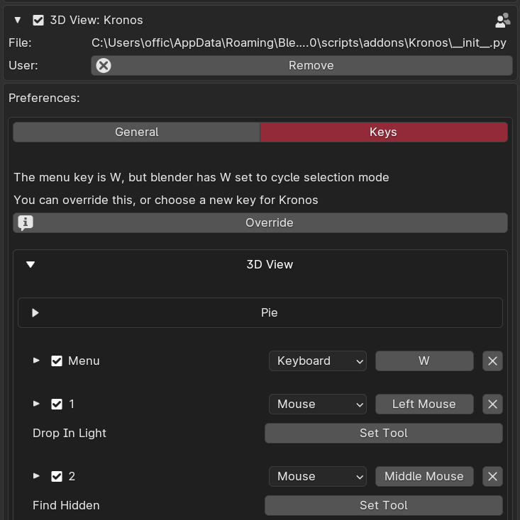
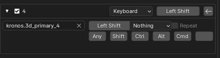

Main menu key not working

To ensure kronos takes priority of the W tool, you can click 'override' to swap the default 'W' swap selection tool for kronos menu.
Else you can set your own keybind in the preferences.
The idea is to ensure the hotkeys are all buttons your fingers rest on. This prevents moving your fingers,
resulting in speed like never before.
Install Button is failing to install dependencies
If your blender folder is location in a place that requires admin to edit such as C:\Program Files\Blender Foundation\Blender 4.0,
you will need to launch blender with admin privileges. Most tools will function without installing dependencies, however some require it and
as such will require you to get admin permissions to run blender and install.
Do of course check you have internet as well and the latest version of blender.
Versions below the latest blender version may work but are considered unsupported and bugfixes for these versions will be unlikely unless largely requested
in favour of more development on tools. Currently 3.6 and 4.0+ are supported.
Can't bind shift for kronos keybinds

Expand the keybind with the arrow on the left, and use the second key input button which will allow shift alone.
Can't move mouse to open pie menu when using trackpad on laptop
Some laptops depending on software will prevent the mouse from moving while a key is held by default. You will have to search up
your specific device online to see how to disable this functionality. For example on my HP laptop I had to use the ELAN touchpad
pre installed software to disable this functionality and allow the mouse to move.
SUPPORT
Contact me at officialcglife@gmail.com for support enquiries.